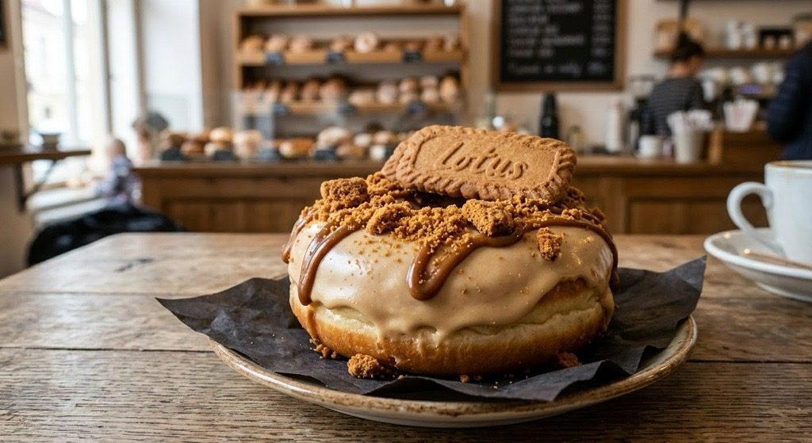
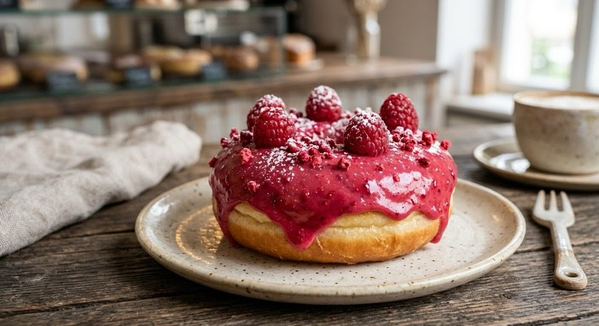
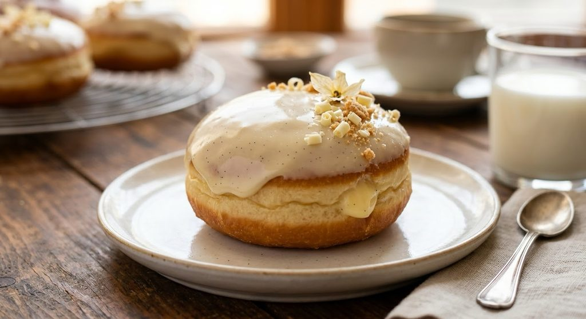

Vítejte v koblížkárně
Každé ráno u nás voní čerstvé těsto. Koblížky smažíme po malých dávkách, plníme je vlastními krémy a zdobíme až na objednávku, aby dorazily co nejčerstvější.
Jak jsme začali
Rok 2020 jsme strávili v domácí kuchyni zkoušením receptů. Chtěli jsme koblížek, který je uvnitř vláčný a ne mastný, a trvalo to déle, než jsme čekali. Když jsme s ním pak zásobovali známé a kolegy, začaly se ozývat objednávky, které už doma nešly zvládnout.
O rok později jsme otevřeli prodejnu na Veveří. Dnes pečeme stovky koblížek denně, ale postup je pořád stejný: pomalé kynutí, dobré suroviny a ruční práce.


